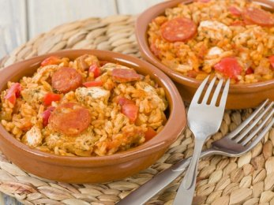

Jambalaya au poulet
Ingredients
6×
- 1 poivron rouge
- 1 oignon
- 1 gousse d'ail
- 200 g de chorizo
- 350 g de poulet
- huile
- 350 g de riz rond
- 100 g de coulis de tomate
- 200 g de chair de tomate
- 2 pincées de thym
- 1 feuille de laurier
- 2 c. à c. de piment de Cayenne
- 75 cl de bouillon

Préparation
Étape 1
Épépiner 1 poivron rouge et le couper en carrés. Émincer 1 oignon et 1 gousse d'ail. Couper 200 g de chorizo en rondelles et 350 g de poulet en morceaux.
Étape 2
Dans une cocotte, rissoler le chorizo 5min dans un peu d’huile chaude, puis le retirer. Dorer le poulet sur toutes les faces et le retirer.
Étape 3
Dans la même cocotte, fondre l’oignon et l’ail 5min. Ajouter le poivron et cuire 8min en remuant.
Étape 4
Remettre le poulet et le chorizo. Ajouter 350 g de riz rond en pluie, 100 g de coulis de tomate, 200 g de chair de tomate concassée, 2 pincées de thym, 1 feuille de laurier et 2 c. à c. de piment de Cayenne. Arroser de 75 cl de bouillon et porter à ébullition.
Étape 5
Enfourner 40min, puis laisser reposer 5min dans le four éteint, porte entrouverte.
Conseils
- La température du four n’est pas précisée dans la recette d’origine.